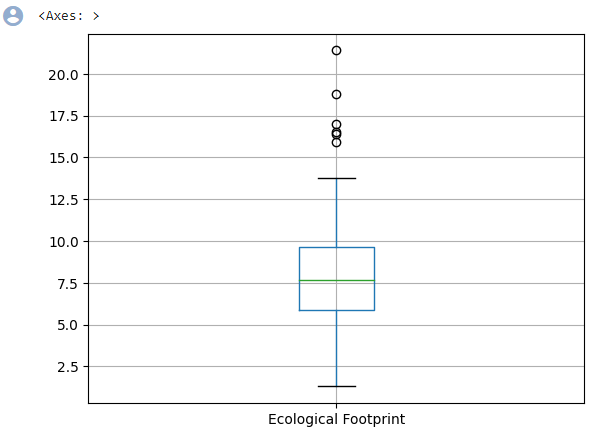

Google Colab is a free to use hosting site that utilizes the Jupyter Notebook to utilize data sciences. Jupyter is a project that develops open-source software that is interactive and allows for the utilization of data science and scientific computing, while keeping a simple modular design. Google Colab is a form of Jupyter, which can utilize three programming languages: Julia, R, and Python. For the purposes of this project, we'll be using Python. We'll be explaining what the code does, as we go through each line and program - through images, and through videos.
Our group utilized Google Colab, because of how much experience we've had with using it, and the positive results that have come from using said service. First off, we gather the data, which was put and formatted into a csv (comma separated values) file. This is a sample of the data:
With the csv file ready to go, we used Google Colab to create a new file and analyze the data.
There is a comma with my name on it, indicating that I started the development of the program. The hashtag/pound symbol is for single-line comments in Python. Second, we import a program/library known as pandas. Pandas is an open-source library that utilizes data analytics that was built using the python language. We have to import it, since it is an outside library, and we're shortening the name to "pd" in order to shorten our code. Next, we're reading in the csv file, with a pandas function called read_csv. This is then assigned a variable called survey_df. The df stands for "dataframe," which is how tables are displayed within the pandas library. Since we surveyed 120 people total, we named it survey_df. Lastly, we can display simply by coding the line "survey_df". here's the results of running this program:
As you can see, it displays only the first 5 and last 5 rows of data. However, it does share similarities to Microsoft Excel:
However, there are also some differences:
Now that we have our data, we can display it and look for ways to search for outliers. In statistics, an outlier is an unusual data point that differs from the other data points. We can easily see outliers with the use of a graph called a boxplot.
There are two comments that explains what is going on. We are graphing the outliers that are located within the column that is titled "Carbon Footprint %". We're taking the dataframe (survey_df), and then using a function that will graph the boxplot using the specified column and returning the Y-Axis that the boxplot is on. By doing this, we get a boxplot that looks like this:
Here's what the parts of the boxplot mean:
Next, we calculate the results for the second boxplot.
Here, we do pretty much the same thing, except the column name is different. This time, we're graphing the Ecological Footprint in GHA (Global Hectacres)
As you can see, we do have some outliers. For the most part, the main graph is of an even width, if you exclude the outliers. With the outliers however (roughly 6), this will skew the graph. Next, we'll display our third graph, which is about the Number of Earths someone will need to live off of.
Again, the main graph is of even width, but with the roughly 5 outliers, the graph will be slightly skewed. Therefore, to answer question 1, there are